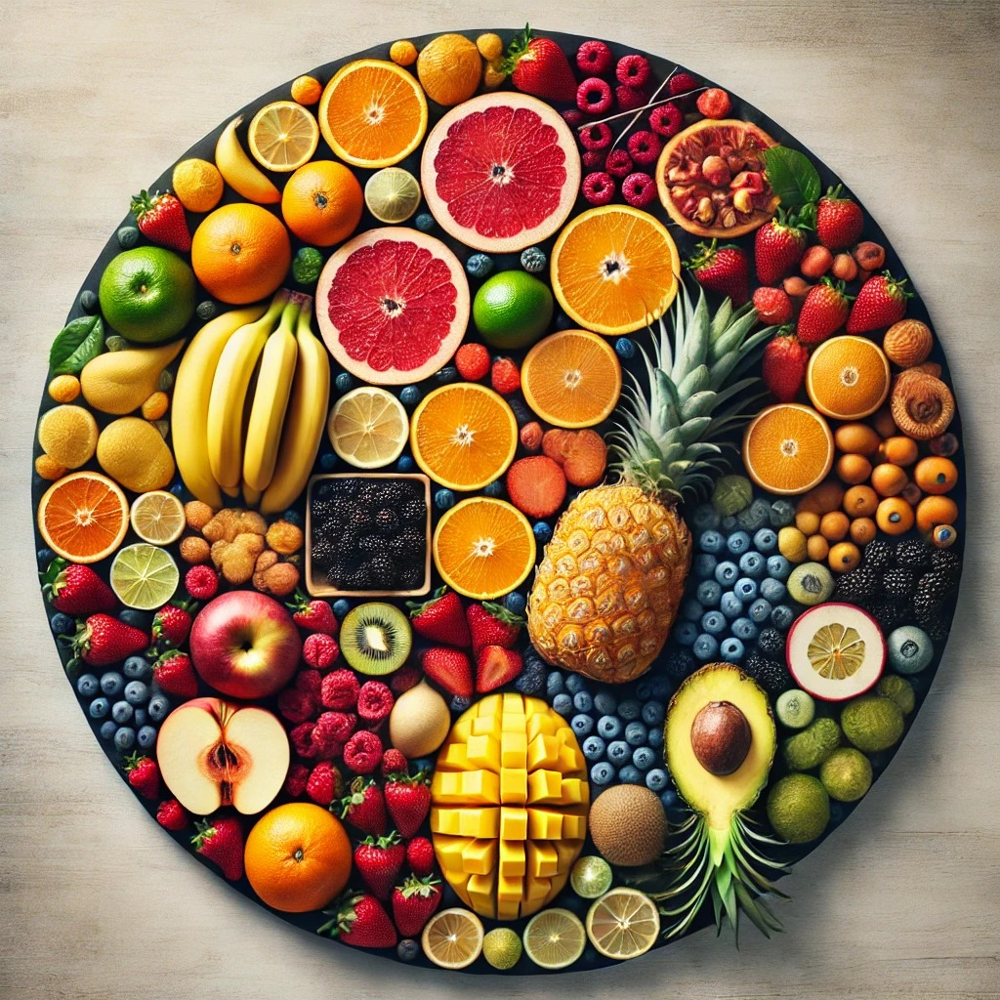

Découvrez les différents types de fruits
Les fruits se classent en plusieurs catégories, chacune ayant ses particularités et bienfaits pour la santé.

Agrumes
Les agrumes comme les oranges, citrons, pamplemousses et mandarines sont riches en vitamine C. Ils sont parfaits pour booster votre système immunitaire.
Baies
Les baies comprennent les fraises, myrtilles, framboises et mûres. Elles sont connues pour leurs propriétés antioxydantes et leur goût sucré ou acidulé.
Fruits Tropicaux
Ananas, mangues, bananes et papayes font partie des fruits tropicaux. Ces fruits apportent une touche exotique et sont souvent riches en vitamines et minéraux essentiels.
Fruits à Noyau
Les fruits comme les pêches, abricots et cerises possèdent un noyau central. Ils sont juteux, sucrés, et parfaits pour les collations ou desserts.
Fruits à Coque
Noix, amandes et noisettes sont des fruits secs riches en bonnes graisses et en protéines. Idéal pour les en-cas sains !